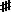

移動サの用語集：サ行
ア行 ｜ カ行 ｜ サ行 ｜ タ行 ｜ ナ行 ｜ ハ行 ｜ マ行 ｜ ヤ行 ｜ ラ行 ｜ ワ行 ｜ 数字・記号
サ（さ：sa / sah）
サルガム・移動サ及び拡張移動サで、主音（完全ⅰ度音）を意味する音度名。「シャドジャ」の略。
原理的に、どのような旋法にも共通して存在するはずであるが、拡張移動サでは、幹音に「サ」を含まないように設定されたメーラが少数ながら存在する。それらは、S＝スヴァラ（ⅰ度音）と隣接する音度が、重増二度よりも広く開いているため、本来基準のはずの S＝スヴァラの方も最初から変化させて表示するメーラで、「ヴィナシュタ＝ムーラ＝メーラ（変壊根メーラ）」と呼ばれる。
サーマン（さーまん：sāman）
歌詠。「終わらせる・熄ませる」を意味する語根√soからの派生と言われ、「落ち着かせるもの・争いを収めるもの」等の原義がある。バラモン教の聖典『サーマ＝ヴェーダ』を構成する韻文。
『サーマ＝ヴェーダ』はヴェーダ文献の中で２番目に成立が古いとされる。先行する『リグ＝ヴェーダ』の吟唱が、原則４音の音階で行われるのに対し、『サーマ＝ヴェーダ』の詠唱法「サーマ＝ガーナ（sāma-gāna）」は、７音が使われる。南アジア文化圏で７音が使われた最古の事例である。
音の名前は、高い方から順に低い方へ、(0)クルシュタ（kruṣṭa：「叫ばれた」）、(1)プラタマ（prathama：「１番目の」）、(2)ドヴィティーヤ（dvitīya：「２番目の」）、(3)トリティーヤ（tṛtīya：「３番目の」）、(4)チャトゥルタ（caturtha：「４番目の」）、(5)マンドラ（mandra：「深い・低い」）、(6)アティスヴァーリヤ（atisvārya：「長く響かせられるべき」）と呼ばれる。
これらは、６つの指孔の開いた笛を、全開放状態から始め、吹き口に近い方から順に指孔を閉じていく操作に由来すると考えられる。例えば、プラタマは、１番目の指孔を閉じるということである。その対比で考えると、これらの音は、現行のサルガム（非拡張）の、マ・ガ・リ・サ・ニ・ダ・パに、順に対応する。トリティーヤがサに相当する。
表記法としては、本文（歌詞）の上に、ルビのように、これらの音位を表す数字と、音長を表す文字を振って旋律を記す。
サーマンという「うた」は聖典そのものであるから、「音楽」と呼ぶのが適切かどうかに問題があり、普通はインド古典音楽に含まれないが、後の南北両インド音楽体系の重要な源流となった。
サフェード（さふぇーど：safed）
北インド音楽で、鍵盤楽器の白鍵のこと。ヒンディー語等で「白い」を意味する。
例えば「サフェード・エーク（白の１）」と言えば、英語式音名のＣの鍵盤のことであり、「サフェード・ドー（白の２）」と言えば、英語式音名のＤにあたる。
対して黒鍵は、カーリーという。
サルガム（さるがむ：sargam）
インド古典音楽の代音唱法。スヴァラ名の略称である「サリガマパダニ」（※「リ」は「レ」とも）を、音度名として使う。但し、古代の用法では階名であったことがある。移動サ。これを拡張した「サ・ラリル・ガギグ・マミ・パ・ダディドゥ・ナニヌ」のセットによる音度名唱が、南インド古典音楽（カルナータカ音楽）では記憶用として使われる。
西洋のドレミは、原則的には本番の歌唱に使われることが無いのに対し、インド古典音楽では、本番の歌唱でもサルガムを楽曲の一部に用いることが頻繁にある。
サンギータ（さんぎーた：saṁgīta）
サンスクリットなどインドの諸言語で「音楽」のこと。声楽と器楽を総称するが、元来は舞踊をも含み、また、狭義には声楽のみを意味する。
ラテン語の“musica”と違い、宇宙論的な波動や諸天体の運行といった意味は含まれず、似たような意味合いは「ナーダ」に与えられている。
語根√gai（歌う）から派生したsaṁ-√gai（合唱する・唱和する）に基づく単語で、語の構成から文字通りには、「合唱されたもの・歌」という意味。類語に「サンギーティ（saṁgīti）」があり、こちらは文字通りには「合唱すること・合唱」の意味であるが、やはり音楽全般をも意味する。
サンディーピニー（さんでぃーぴにー：sandīpinī）
インド音楽におけるシュルティ名で、音階基準音から上方に16番目の音程。原義は「火をつける」または「興奮させる・挑発する」の女性形。
音程幅は学説により、約41.1￠または約53.3￠。ジャーティは、アーヤター。
三和音（さんわおん：triad）
三つのピッチクラスの音から成る和音で、特に、三度の音程を（上方に）二つ積み重ねた構造のもの。通常、三和音と言えば、次の四種類を指す。
長三和音：（長三度＋短三度）＝完全五度
短三和音：（短三度＋長三度）＝完全五度
減三和音：（短三度＋短三度）＝減五度
増三和音：（長三度＋長三度）＝増五度
広義には、減三度や増三度、中三度・縮三度・伸三度など、様々な音程の組合せの和音を含む。
軸音（じくおん：axis）
四分音（しぶんおん：quarter tone）
微分音の一種で、全音を四分割、半音を二分割した音程単位。セント値でいえば、50±6￠程度。
なお、四分音を入れた場合の音程接頭辞の、ここでの日本語表記は、次の通りとする。
完全系：累畳重減・縮畳重減・畳重減・縮重減・重減・縮減・減・縮・完全・伸・増・伸増・重増・伸重増・畳重増・伸畳重増・累畳重増
長短系：累畳重減・縮畳重減・畳重減・縮重減・重減・縮減・減・縮・短・中・長・伸・増・伸増・重増・伸重増・畳重増・伸畳重増・累畳重増
〔両系統の差は、中央部の＜完全＞と＜短・中・長＞とが、置き換わっているだけである。〕
ジャーティ（じゃーてぃ：jāti）（１）
ジャーティ（じゃーてぃ：jāti）（２）
インド古典音楽の微分音であるシュルティの種類。
ディープター、アーヤター、ムリドゥ、マディヤー、カルナーの５つがある。
シャープ＝アンド＝ア＝ハーフ（sharp-and-a-half）
ナチュラル（♮）音より、３四分音高い音、または６コンマ高い音を示す、変化記号の一種。シャープ（♯）の縦棒を一本増やした形で、のような形をしている。
シャドジャ（しゃどじゃ：ṣaḍja）
インドの伝統によるⅰ度音の音度名。「サ(S)＝スヴァラ」。スヴァラの一つ。表記は「シャッジャ」または「ハルジャ（kharja）」とも。
漢訳では「具六」という。伝承的には、「６つの発声器官から生じるもの」の意で、その発声器官とは、鼻・喉・胸・口蓋・舌・歯だというのであるが、実際には、「他の６つのスヴァラとの関係で生じるもの」と考えた方がいいのではないか。クジャクの鳴き声の音とも言われるが、決まった音高があるわけではなく、各旋法につれて移動する。
シャブダ（しゃぶだ：śabda）
サンスクリットで一般に「声」「音声」の意味。「ことば」や記号そのものの意味もある。「シャブダそれ自体」が「ブラフマン（神）」をであるともされ、「ナーダ」と同等以上に宗教哲学的な意味を背負った用語である。なお、発言・弁舌一般には「ヴァーチュ（vāc）」、個別の話言葉（言語）を指すには「バーシャー（bhāṣā）」などの語が使われる。
音楽の文脈では、「声音」「音調」の意味から、アーティキュレーション（歯切れ具合）や音色・表情・音の佇まいに関すること全般を総称する。「ヴァルナ」と対になる概念。
十二律（じゅうにりつ）
東アジア圏の伝統的な音名。音階の均を言い表すのにはこれを用いる。階名である五音（ごいん）七声（しちせい）と対になる概念で、上古（周代）から用いられたもの。唐代には、両者の掛け合わせで八十四調の体系が作られた。ハ長調に相当するのは、仲呂均徴調（双調均徴調）である。
十二律の名称については、支那本来の音律のものと、日本独自のもので相違がある。
支那では、(1)黄鍾(2)大呂(3)太簇(4)夾鍾(5)姑洗(6)仲呂(7)蕤賓(8)林鍾(9)夷則(10)南呂(11)無射(12)應鍾。
日本では、(1)壹越(2)斷金(3)平調(4)勝絶(5)下無(6)双調(7)鳧鐘(8)黄鐘(9)鸞鏡(10)盤渉(11)神仙(12)上無。
いずれも、西洋音楽のおよそD音を起点に、12個の半音を昇行方向に名づけるもの。支那での名前と日本での名前では、その大部分が異なる。そして、支那の黄鍾は「こうしょう」、日本の黄鐘は「おうしき」と読むので、読みとしては一致するものはない。両者はいずれも、順序に規則が見てとれず、覚えるのが手間であるが、それぞれの中で全て頭文字が異なるため、ひと文字で略記可能である。漢字が複雑なので、譜に書くために簡単な記号を用いる流派もある。
オクターヴ差に関しては、支那では、より高いオクターヴに「清」、低いオクターヴに「濁」を付ける。日本では、「上（かり）」と「下（めり）」を用いる。
主音（しゅおん：tonic / keynote）
旋法の音の動きの中で最も落ち着く感じがあり、その音に帰着しようとする力が働く音。音度を数える場合の基準となり、ⅰ度音とされる。旋法の構成音の役割の一つ。
但し、必ずしも全ての楽曲の旋律が主音で終止するわけではない。
インド古典音楽では、何らかの旋法が奏でられる間、旋法内の音程の基準として、通奏音の中で常に鳴らされている。移動サにおける「サ」音。
シュッダ（しゅっだ：śuddha）
インド古典音楽の楽典において、西洋音楽の「ナチュラル」に相当する。本来の意味は「純粋な・清らかな」。反対に変化音は、総称して「ヴィクリタ」（変化した・不正な）と表現する。
但し、北インド音楽（ヒンドゥスターニー音楽）と南インド音楽（カルナータカ音楽）では、最も基本とされる音階・旋法が異なるため、例えば同じく「シュッダ＝ガ」と言っても、「サ」に対して互いに違う音程を指す。従って、文脈の明示が必要である。
シュルティ（しゅるてぃ：śruti）
インド古典音楽における微分音。オクターヴを22に不均等分割した１つ１つの音程。それぞれに一種の階名に相当するシュルティ名があるが、歌唱向きではなく、それで歌うことはしない。また、単一の演奏に使うための音階ではなく、そこから使う音階が拾い出される〔→グラーマ〕。シュルティの名称一覧は「22個のシュルティ」を参照のこと。
ヨーロッパや東アジアのように、オクターヴを12に分割する楽典モデルとの違いは、基本音階を構成する音程を、何種類に集約するかである。12分割モデルでは、2種類（全音と半音）に集約し、それぞれの音程幅に「2」と「1」を配当する。それに対し、インド古典音楽の22分割モデルでは、3種類、即ち、大全音・小全音・大半音の3種の音程に集約し、それぞれの音程幅に「4」「3」「2」を配当する。七音音階で、「4+3+2+4+3+4+2 = 22」という計算になる。
逆に、古代インドには、オクターヴ12分割モデルの考え方はなかったので、22分割モデルが微分音という意識もなかったであろう。近世以降の楽典では、12分割モデルの図式が併用されている。
純正律にきっちり合わせるためには、シュルティには少なくとも３種類の音程幅の差異〔即ち、22￠・70￠・90￠〕があったと考えると理論的に分かりやすいが、インド古代の文献では、シュルティの音程に種類があると明記したものはないようである。従って、シュルティは本来均等に22分割であったと考える説もあるが、完全に均等分割〔即ち、１シュルティ＝54.545￠：２２平均律〕としても、純正律との音程誤差は、最大20￠未満（即ち、平均律の半音の５分の１より狭い）に収まっており、古代の近似値としては十分に納得できる範囲である。特に長三度（短六度）［＝７シュルティ／15シュルティ］や短二度（長七度）［＝２シュルティ／20シュルティ］の近似は優秀である。広い長二度として、７リミットの音程（7：8の振動数比）も多用したと考えれば、さらに自然である。
語義としては、動詞√śru（聞く・聞こえる・伝え聞く）に由来し、「聞くこと・聞こえること」が原義。「聞き取れる音程」の意味。微細な音律的差異ではなく、多くの人が明らかに聞き分けられるものとしての単位音程を意図する。
純音（じゅんおん）
ただ一つの周波数〔振動数〕の振動のみから成る音。部分音を一つしか持たない音。
純正律（じゅんせいりつ：just intonation）
基本となる音から他の各音の周波数比〔振動数比〕が、整数比であるように、しかもなるべく単純な比になるように定められた音律。
狭義には「完全純正律」と呼ばれるものを指す。その主な周波数比〔振動数比〕は、完全八度＝「１：２」、完全五度＝「２：３」、完全四度＝「３：４」、長三度＝「４：５」、短三度＝「５：６」、大全音（広い長二度）＝「８：９」、小全音（狭い長二度＝「９：１０」などとなっている。その調における主要な音程が、単純な整数比で定められているため、正確に協和する。
純正律は、正確に協和するように取られている音程や調は非常に美しいのが特徴だが、音の組み合わせによっては全く協和しないようになっているため、そのままの調律で他の調を弾いたりするとしばしば聞き苦しくなる。簡単に音程の微調整のきく仕組みの楽器を用いるか、あらかじめ微分音的な多くの音高の弦や鍵盤を用意しておく必要がある。
広義にはピタゴラス律などを含む。弦や管の長さを等分したり、うなりの聞こえなくなる位置を取るなど、音の決め方が分かりやすいため、古代から使われていて、様々なバリエーションがある。対比される概念として、平均律を参照。
順旋音（じゅんせんおん：anuvādī）
旋法の音の動きの中で３番目以下に長くまたは頻繁に滞在する音。演音（軸音）と副演音（補軸音）を除く、残りの旋法構成音。アヌヴァ―ディー。旋法の構成音の役割の一つ。
副演音（補軸音）が通常、演音（軸音）から四度または五度の関係に位置するのに対し、順旋音は主として、演音（軸音）から三度・六度の関係の音のことを指す。
演音（軸音）・副演音（補軸音）・違旋音と組になった概念。
上音（じょうおん）
小全音（しょうぜんおん）
唱法（しょうほう）
歌い方。発声法を指す場合（「ベルカント唱法」など）、装飾法を指す場合などもあるが、単に「唱法」という場合は、通常、代音唱法の略である。
スヴァラ（すゔぁら：svara：(note)）
旋法の各音度の音。旋法の構成音。あるいは広く楽音のこと。インド音楽の用語。一般の用法では、より広く「音」を意味する。
移動サにおいては、ⅰ度音を「シャドジャ」または「サ(S)＝スヴァラ」、ⅱ度音を「リシャバ」または「リ(R)＝スヴァラ」、ⅲ度音を「ガーンダーラ」または「ガ(G)＝スヴァラ」、ⅳ度音を「マディヤマ」または「マ(M)＝スヴァラ」、ⅴ度音を「パンチャマ」または「パ(P)＝スヴァラ」、ⅵ度音を「ダイヴァタ」または「ダ(Dh or D)＝スヴァラ」、ⅶ度音を「ニシャーダ」または「ニ(N)＝スヴァラ」とする。拡張移動サでは、さらに追加できるスヴァラも用意されている。
なお、南インドの古代タミル語では、７音音階の各音を「ナランブ」と称し、別の名称のセットがある。
全音（ぜんおん：whole tone / whole step）
音程の単位で、半音の２倍。オクターヴの６分の１。
ドレミで言えば、「ド―レ」「レ―ミ」「ファ―ソ」「ソ―ラ」「ラ―シ」間のそれぞれの音程のこと。セント値で言えば、12平均律では200￠であり、音律により、概ね182￠・204￠または231￠といった値を示す。
全音階（ぜんおんかい：diatonic scale）
〔→ディアトニック音階〕※「全音音階」とは違うことに注意。
セント値（せんとち：cents）
音程の表記の一つ。１オクターヴを1,200等分した音程を、１￠（セント）という単位とし、12平均律の全音は200￠、半音は100￠である。
「２音間の周波数比が、「２の『1,200乗根』」の何乗に当たるか」で表される対数値。
旋法（せんぽう：musical mode）
音階に対して、各構成音の役割や、旋律の作法を定めたもの。西洋古典音楽における教会旋法や、インド古典音楽におけるメーラやラーガは、全て旋法に含まれる。中国語で「調式」とも。
西洋音楽で言う「長音階（長調）」や「自然短音階（短調）」は、「音階」という言葉が付いているが、同一の音階（ディアトニック音階（全音階））に属する、互いに異なった旋法である。
音階と同様、構成音の音程や役割関係を保ったまま、全体を高低に移す（＝移調）することができ、移調しても同じ種類の旋法である。
属音（ぞくおん：dominant）
主音から完全五度上の音。完全ⅴ度音。移動サでは「パ」。
属調（ぞくちょう：dominant key）
もとの調の属音（＝パ）を主音とする、同じ旋法による調。例えば、ハ長調に対するト長調。
属調平行調（ぞくちょうへいこうちょう）
ソルフェージュ（そるふぇーじゅ：solfège）
ソルミゼーション（そるみぜーしょん：solmization）
ア行 ｜ カ行 ｜ サ行 ｜ タ行 ｜ ナ行 ｜ ハ行 ｜ マ行 ｜ ヤ行 ｜ ラ行 ｜ ワ行 ｜ 数字・記号
（最終更新2013.10.4）